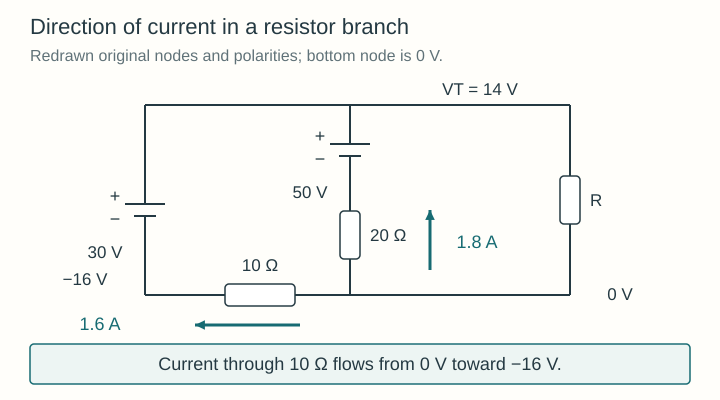
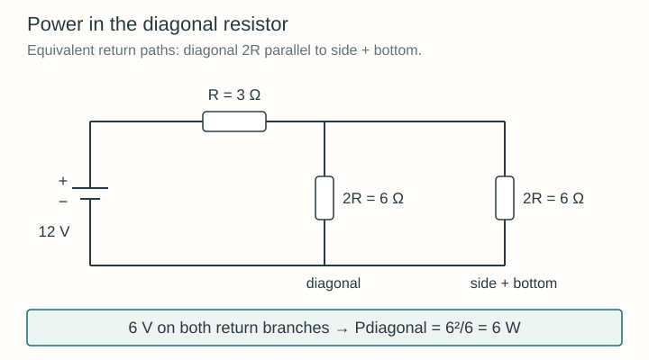
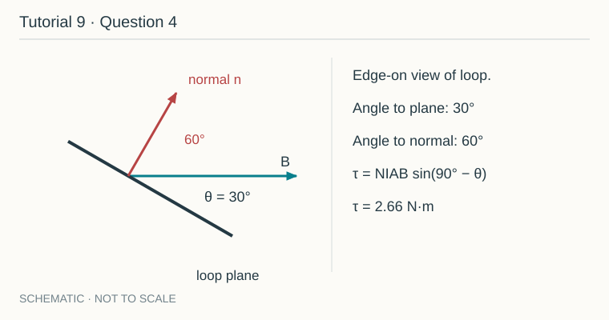
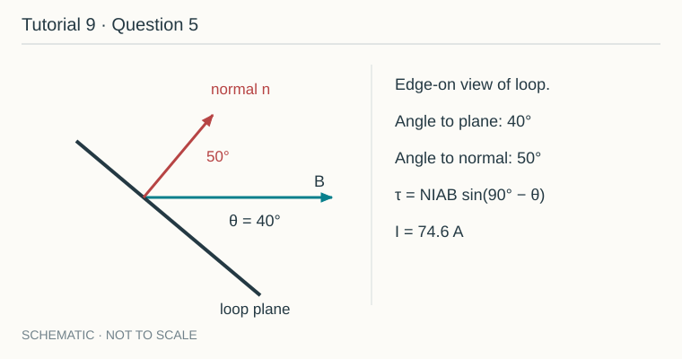

Start with homework and tutorials. Then use textbook variations to test the method.
Hints checked in D2L · November 25, 2026
START HERE
Match each hint to your course questions
The topics below are explicitly named by the instructor. The question selections and possible variations are study recommendations, not predictions of exact exam questions.
Required topic
RC circuit analysis
Explicitly listed under “Both of these.” The RC handout also practises charging, discharging and equivalent capacitance.
HW 10 27.21 and Tutorial 9 Q10 use positive particles, so they are method matches rather than the actual electron experiment. Read the demonstration handout after those questions.
These are the ideal cyclotron equations used by the assigned problem. Do not assume unprovided TRIUMF machine values or extend the nonrelativistic energy formula to high energies without checking the model.
Focused on charged-particle collisions, Gauss’s law and capacitors/dielectrics.
For CK 3, retain energy and capacitance basics but shift practice to circuits and magnetic motion. CK 2’s tilt/dielectric emphasis is not named in the CK 3 hint.
Test transfer: choose one new textbook variation per prepared topic from the final section.
Core = closest practice for a named hint. Support = an ingredient. Extension = a more demanding variation. The model options remain alternatives even when their practice is labelled Core.
COURSE QUESTIONS FIRST
Homework and tutorial practice
14 homework questions and 11 tutorial questions, with existing worked explanations. Shared questions appear once. Tutorial numbers follow the D2L filenames: “9 Mag Force on Charges” has an old “Tutorial #7” heading inside the PDF.
Checks save in this browser.
No questions match. Clear the search or change a filter.
Homework
HW 9 · 26.39Voltmeter discharges a capacitorCore
Why this one: Infer capacitance from a decaying voltmeter reading.
Same question in textbook 15e: 26.37. Count this once.
Initially V₀ = 12.0 V. A 3.40 MΩ voltmeter reads 3.0 V after 4.00 s. Find capacitance and time constant.
Why this one: Reduce the parallel capacitors and series discharge resistors before using the exponential.
Same question in textbook 15e: 26.41. Count this once.
15.0 µF and 20.0 µF capacitors are parallel, initially at 45.0 V. Closing the switch discharges them through 50.0 Ω and 30.0 Ω in series. Find time to reach 10.0 V and current then.
Why this one: Use source polarity and common node voltage to find branch currents.
Same question in textbook 15e: 26.22. Count this once.
Three branches connect top/bottom nodes: a 10.0 V source (+ on top), a 30.0 Ω resistor, and a 20.0 Ω resistor above a 5.00 V source (+ on top). Find current through each resistor and the 10 V battery.
HW 9 · 26.28Three-branch circuit and node voltageCore
Why this one: Closest full KCL/KVL match: three branch currents and Vab.
Same question in textbook 15e: 26.26. Count this once.
Top branch left→right: 2 Ω, 10 V source (+ left), point a, 3 Ω. Middle: 1 Ω, 5 V source (+ left), point b, 4 Ω. Bottom: 10 Ω. Find branch currents and Vₐ − Vᵦ. Do only 26.28.
Why this one: Connect accelerating potential, speed, radius and half-orbit time.
Same question in textbook 15e: 27.20. Count this once.
Deuteron mass 3.34 × 10⁻²⁷ kg and charge +e; orbit radius 6.96 mm in B = 2.50 T. Find speed, half-orbit time, and accelerating potential magnitude from rest.
Why this one: Closest cyclotron match: maximum energy, period, field scaling and alpha particles.
Same question in textbook 15e: 27.52. Count this once.
Cyclotron B = 0.85 T, maximum orbit radius 0.40 m. Proton q = 1.60 × 10⁻¹⁹ C, m = 1.67 × 10⁻²⁷ kg. Alpha q = 3.20 × 10⁻¹⁹ C, m = 6.64 × 10⁻²⁷ kg. Find proton maximum energy in J/eV, period, B needed to double energy, and alpha maximum energy at 0.85 T.
Why this one: Combine I = V/R with magnetic lift-off and acceleration.
Same question in textbook 15e: 27.31. Count this once.
Bar L = 0.500 m, mass 0.750 kg, B = 0.450 T into the page; current runs rightward. Series resistance starts at 25.0 Ω, then falls to 2.0 Ω. Find maximum battery voltage before lift-off, then initial acceleration after resistance falls.
Why this one: Draw every segment force and identify which contributes torque about the hinge.
Same question in textbook 15e: 27.37. Count this once.
Rectangle abcd: vertical ab = cd = 0.200 m; horizontal bc = da = 0.350 m. Clockwise current 5.00 A; B = 1.20 T rightward; hinge along left side ab. Find force directions, identify which force torques the hinge, and calculate torque.
Why this one: Separate zero net force from nonzero torque after rotating the loop.
Same question in textbook 15e: 27.38. Count this once.
Loop 0.220 m × 0.350 m, I = 1.95 A counterclockwise, B = 1.50 T into page. Initially loop plane is perpendicular to B; then rotate 30° with left side outward and right side inward. Find net force and torque before and after rotation.
Both net forces zero; torque 0 initially, then 0.113 N m continuing the rotation.
The initial magnetic moment is opposite B (unstable equilibrium). After the stated rotation the torque continues that rotation, with left side moving further out.
HW 11 · 27.69Suspended loop in equilibriumExtension
Why this one: Combine magnetic torque and gravitational torque to solve an equilibrium angle.
Same question in textbook 15e: 27.65. Count this once.
Loop width 6.00 cm, height 8.00 cm, mass per length 0.15 g/cm, current 8.2 A as in handout. Hinge is its upper 6 cm side; plane tilts 30° from yz-plane. B is parallel to y. Find magnitude and direction of B needed for equilibrium.
B points upward along +y for the shown current. The wire loop’s centre of mass lies halfway down; counting only the bottom wire would underestimate gravity torque.
Why this one: Resistor reduction and ideal-meter conventions used inside circuit questions.
Same question in textbook 15e: 26.6. Count this once.
45 Ω and 35 Ω are in series with a parallel group: 25 Ω (ammeter branch), 15 Ω, and (15 Ω + 10 Ω). Ideal ammeter reads 1.25 A; voltmeter spans 45 Ω. Find voltmeter reading and battery emf.
Why this one: Orbit radius, charge sign and the fact that magnetic force does no work.
Same question in textbook 15e: 27.19. Count this once.
Particles have |q| = 3e, m = 12mₚ and enter downward into B = 0.250 T out of the page. They curve to the right through a semicircle of diameter 0.950 m. Find speed and charge sign, assess gravity, and compare entry/exit speeds.
Why this one: Apply wire force to motion and distance in a rail-gun model.
Same question in textbook 15e: 27.59. Count this once.
A bar of mass m and length L bridges horizontal rails in uniform vertical field B, carrying constant current I across the bar as shown in the handout. Ignore friction and gravity for the motion. Derive force and distance from rest to speed v; evaluate for 11.2 km/s, B = 0.80 T, I = 2.0 × 10³ A, m = 25 kg, L = 0.50 m.
Tutorial 8 · Q5Direction of current in a resistor branchCore
Why this one: Use a known branch to solve the current in another branch.
In the diagram the middle branch has a 20 Ω resistor below a 50 V source (+ at top), with 1.8 A upward. The left branch has a 30 V source (+ at top) and a bottom 10 Ω resistor. Find the current magnitude and direction through the 10 Ω resistor.

Worked solution
Existing Tesselate worked explanation.
Set the bottom/right node to zero
Move upward through the middle branch: a 36 V drop across the resistor is followed by a 50 V rise across the source.
VT−VB=50−(1.8)(20)=14V
Find the lower-left node potential
The left source puts the top node 30 V above its lower terminal.
VL=VT−30=14−30=−16V(VB=0)
Use Ohm’s law with a direction
The right end of the 10 Ω resistor is at 0 V and its left end is at −16 V; conventional current flows right to left.
I10=10VB−VL=100−(−16)=1.6A
I10=1.6Aright to left(A)
The middle current sets the node voltage without needing the unspecified right-hand R. The loop voltage changes sum to zero; matches key A.
Tutorial 8 · Q4Power in the diagonal resistorSupport
Why this one: Reduce a series-parallel network and calculate branch power.
A 12 V source feeds a top resistor R. From its right-hand node to the source return, a diagonal resistor 2R is in parallel with two other R resistors in series. With R = 3.0 Ω, find power in the diagonal 2R resistor.

Worked solution
Existing Tesselate worked explanation.
Reduce the two return paths
The side-and-bottom path has resistance 2R, equal to the diagonal path. Their parallel equivalent is R.
Rreturn=(2R)∥(2R)=R,Rtot=2R=6.0Ω
Find the return-path voltage
The source voltage divides equally between top R and the return equivalent R.
Isource=612=2.0A,V2R=IsourceR=6.0V
Calculate diagonal power
The actual diagonal resistance is 2R = 6.0 Ω.
P2R=2RV2R2=6.06.02=6.0W
P2R=6.0W(C)
Each return branch carries 1 A; the two branch currents sum to 2 A. Matches key C.
Why this one: Include the number of turns and interpret the plane angle.
An 80-turn rectangular loop has a=0.40 m, b=0.30 m and I=8.0 A. B=40 mT in +x. Its plane makes θ=30° with +x as shown. Find the torque magnitude about y.

Worked solution
Existing Tesselate worked explanation.
Identify the angle to the normal
The torque formula uses the normal-to-field angle, 90°−θ, rather than the angle to the plane.
A=ab=0.12m2,α=60∘
Evaluate the dipole torque
Multiply by the number of turns.
τ=NIABsinα=80(8.0)(0.12)(0.040)cos30∘=2.66Nm
τ≈2.7Nm(d)
The value is below the maximum NIAB=3.072 N·m. Matches key (d).
Tutorial 9 · Q5Current required for loop torqueCore
Why this one: Rearrange loop torque to find the required current.
A single-turn square loop is 50 cm on a side. A 70 mT field makes 40° with the loop plane. What current gives a torque of 1.0 N·m about the specified central axis?

Worked solution
Existing Tesselate worked explanation.
Find area and normal angle
Convert 50 cm to 0.50 m; the normal is 50° from the field.
From rest, electric work gives kinetic energy. In a perpendicular uniform magnetic field, the magnetic force supplies centripetal acceleration.
eV=21mv2,evB=mv2/r⇒e/m=2V/(B2r2)
For the demonstration’s Helmholtz coils:
B=558Rμ0nI=αI,me=α2I2r22V
The handout uses n = 130 turns per coil, coil radius R = 0.15 m, and α = 7.79286 × 10⁻⁴ T/A. The beam radius is r. At fixed V, r is proportional to 1/I; at fixed B, r² is proportional to V.
Inside a dee, B bends the trajectory without changing speed. At a correctly timed gap crossing, the electric field increases kinetic energy.
∣q∣vB=mv2/r⇒T=v2πr=∣q∣B2πm
Kmax=2mq2B2rmax2,ΔKcrossing=∣q∣Vgap
For the ideal two-dee model, there are two gap crossings per revolution and the gap polarity reverses every half-turn. With a fixed energy gain per crossing, N = (Kfinal − Kinitial)/(|q|Vgap).
State the assumptions: uniform B, perpendicular motion, negligible losses and nonrelativistic speed. Explain these before treating the formula as a model of a real accelerator.
TEXTBOOK QUESTIONS SECOND
12 fresh follow-ups
These are additional questions from University Physics with Modern Physics, 15th edition. They were checked against the downloaded book. The original question images and diagrams are included, with a starting cue. The filters above also apply here.
Textbook 15e · 26.38Charging: current, time and powerFollow-up
Why this one: Adds instantaneous current and capacitor power to HW 9’s charging model.
Young & Freedman, 15th edition · printed p. 872 · PDF p. 892. Select the image to enlarge. Figure E26.26 is reused; reverse the 10 V battery as instructed.How to start
∑I=0,∑ΔV=0
A method cue for your attempt; this is not a complete worked solution.
Textbook 15e · 26.30Infer an emf and test its polarityFollow-up
Why this one: Uses a supplied ammeter reading; a negative emf means the pictured polarity must be reversed.
Young & Freedman, 15th edition · printed p. 911 · PDF p. 931. Select the image to enlarge.How to start
τ=NIABsinθ,Acircle=4πL2for one turn
A method cue for your attempt; this is not a complete worked solution.
DO NOT CONFUSE THE NUMBERS
Handout ↔ textbook 15e
These are the same questions under different labels, so they are not counted as extra practice. Match the wording and diagram before using any solutions-manual number.
Sources: D2L announcements checked November 25, 2026; saved course homework, tutorial and demonstration handouts; downloaded Young & Freedman 15e. Source images preserve the original questions. Recommendations and possible variants are Tesselate analysis. No question is guaranteed to appear.